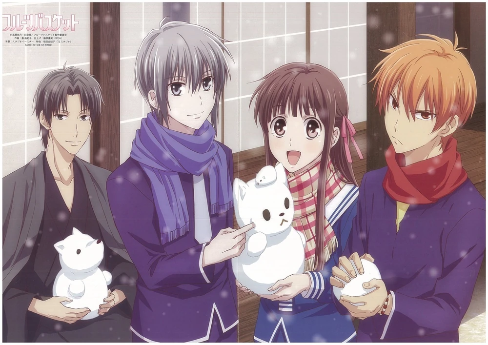
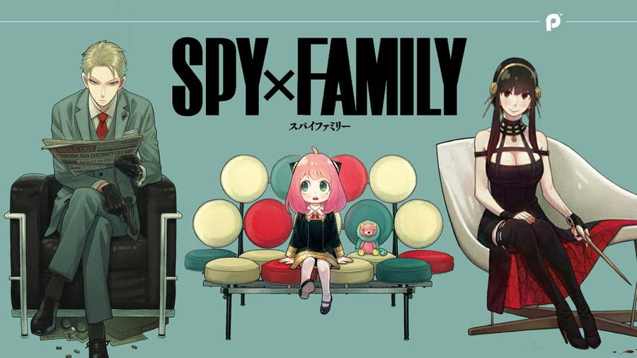
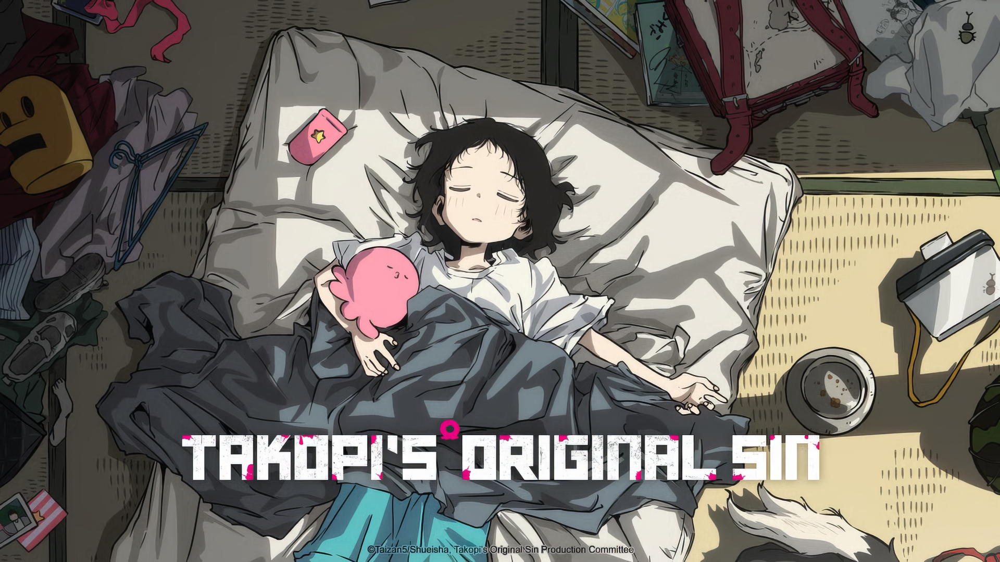

🎬 Rekomendasi Anime
Beberapa anime yang seru untuk ditonton💫
Sousou no Frieren

Genre: Fantasy, Adventure, Drama
Penyihir Frieren berhasil membawa kedamaian ke dunia setelah petualangannya bersama sang Pahlawan Himmel dan teman-temannya yang telah berlalu selama 10 tahun berakhir dengan mengalahkan Raja Iblis. Sebagai Elf yang telah hidup lebih dari seribu tahun, dia kemudian memutuskan untuk melakukan perjalanan seorang diri setelah berjanji untuk kembali bertemu dengan Himmel dan yang lainnya. 50 tahun kemudian, Frieren bertandang ke tempat Himmel, tetapi berbeda dengan dirinya yang tidak berubah selama 50 tahun ini, Himmel sudah renta dan hidupnya kini sudah tidak lama lagi. Setelah menyaksikan kematian Himmel, dia tersadar bahwa selama ini tidak pernah berusaha untuk “mengenal manusia”. Menyesali hal tersebut, Frieren memutuskan untuk melakukan perjalanan demi “mengenal manusia”. Dalam perjalan itu dia bertemu dengan berbagai orang, dan berbagai kejadian juga menanti dirinya.
Coba tonton Episode 1: Sousou no Frieren
Fruits Basket
Genre: Romance, Drama, Supernatural
Cerita mengikuti Tohru Honda, seorang gadis SMA yang baik hati dan optimis. Setelah kehilangan ibunya, ia tinggal sendirian di tenda hingga suatu hari ditemukan oleh keluarga Sohma. Tohru kemudian mengetahui rahasia besar mereka: beberapa anggota keluarga Sohma terkutuk untuk berubah menjadi hewan dari zodiak Tionghoa ketika dipeluk oleh lawan jenis. Meski awalnya terkejut, Tohru bertekad untuk membantu mereka menerima diri sendiri dan saling menyembuhkan luka batin. Sepanjang kisahnya, hubungan antara Tohru dan para anggota Sohma berkembang, diwarnai drama, romansa, dan pelajaran tentang penerimaan, cinta, serta pengampunan.
Coba tonton Episode 1: Fruits Basket
SpyxFamily
Genre: Action, Comedy, Childcare
Seorang mata-mata hebat bernama Twilight mendapat misi penting: ia harus membentuk keluarga palsu demi mendekati target politik. Ia pun menyamar sebagai Loid Forger, menikah dengan seorang wanita bernama Yor (yang diam-diam adalah pembunuh profesional), dan mengadopsi seorang anak perempuan bernama Anya (yang ternyata bisa membaca pikiran). Meski awalnya hanya pura-pura, keluarga “Forger” ini perlahan mulai merasakan arti keluarga yang sebenarnya.
Coba tonton Episode 1: SpyxFamily
HunterxHunter

Genre: Action, Adventure, Fantasy
Seorang anak bernama Gon Freecss bertekad menjadi Hunter, petualang profesional yang mencari harta karun, makhluk langka, dan rahasia dunia — demi menemukan ayahnya, Ging Freecss, seorang Hunter legendaris. Dalam perjalanannya, Gon bertemu tiga teman: Killua Zoldyck, pembunuh muda dari keluarga pembunuh bayaran, Kurapika, yang ingin membalas dendam pada pembantai klannya, Leorio, calon dokter yang bercita-cita membantu orang miskin. Bersama-sama mereka menghadapi ujian berbahaya, pertempuran intens, dan rahasia gelap dunia Hunter.
Coba tonton Episode 1: HunterxHunter
Takopii no Genzai
Genre: Drama, Psychological, Time Travel
Seekor makhluk polos bernama Takopii datang dari Planet Happy ke Bumi dengan misi menyebarkan kebahagiaan. Ia bertemu dengan seorang gadis SD bernama Shizuka, yang hidupnya penuh penderitaan karena perundungan di sekolah dan kekerasan di rumah. Takopii, yang tidak memahami konsep “kejahatan” atau “kesedihan”, mencoba menolong Shizuka dengan cara-cara naif — namun tindakannya justru memicu tragedi besar yang mengubah hidup semua orang di sekitarnya.
Coba tonton Episode 1: Takopii no Genzai